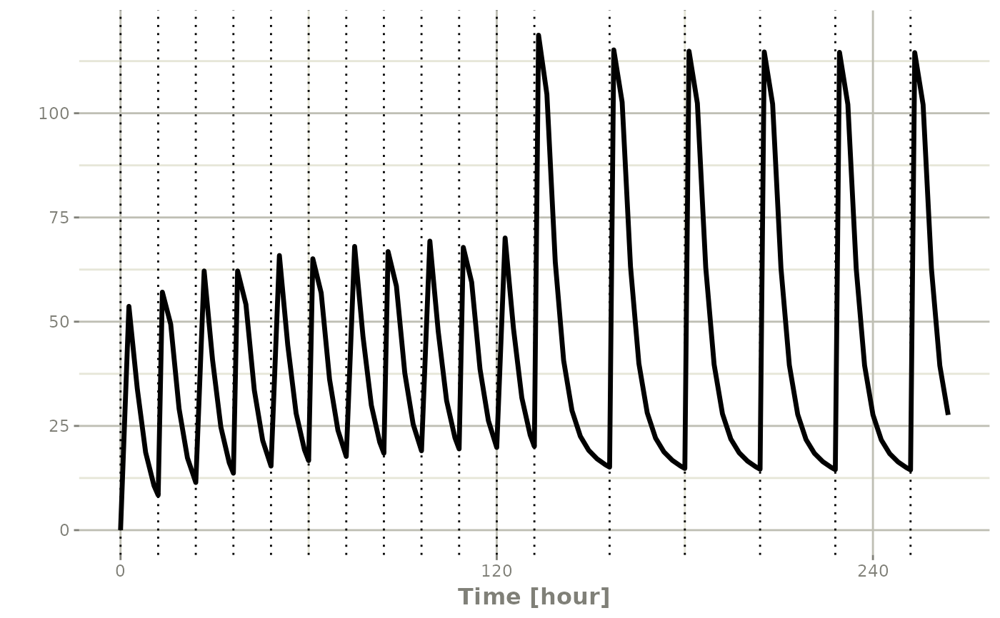
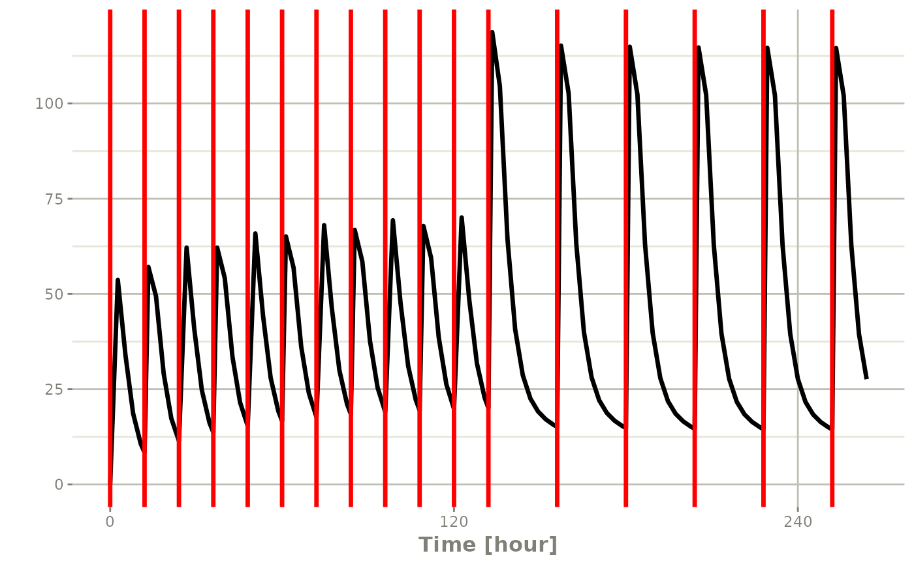

This is a dosing geom that shows the vertical lines where a dose occurs
Usage
stat_amt(
mapping = NULL,
data = NULL,
position = "identity",
show.legend = NA,
inherit.aes = TRUE,
...
)
geom_amt(
mapping = NULL,
data = NULL,
position = "identity",
show.legend = NA,
inherit.aes = TRUE,
...
)Arguments
- mapping
Set of aesthetic mappings created by
aes()oraes_(). If specified andinherit.aes = TRUE(the default), it is combined with the default mapping at the top level of the plot. You must supplymappingif there is no plot mapping.- data
The data to be displayed in this layer. There are three options:
If
NULL, the default, the data is inherited from the plot data as specified in the call toggplot().A
data.frame, or other object, will override the plot data. All objects will be fortified to produce a data frame. Seefortify()for which variables will be created.A
functionwill be called with a single argument, the plot data. The return value must be adata.frame, and will be used as the layer data. Afunctioncan be created from aformula(e.g.~ head(.x, 10)).- position
Position adjustment, either as a string, or the result of a call to a position adjustment function.
- show.legend
logical. Should this layer be included in the legends?
NA, the default, includes if any aesthetics are mapped.FALSEnever includes, andTRUEalways includes. It can also be a named logical vector to finely select the aesthetics to display.- inherit.aes
If
FALSE, overrides the default aesthetics, rather than combining with them. This is most useful for helper functions that define both data and aesthetics and shouldn't inherit behaviour from the default plot specification, e.g.borders().- ...
Other arguments passed on to
layer(). These are often aesthetics, used to set an aesthetic to a fixed value, likecolour = "red"orsize = 3. They may also be parameters to the paired geom/stat.
Details
Requires the following aesthetics:
x representing the x values, usually time
amt representing the dosing values; They are missing or zero when no dose is given
Examples
library(rxode2)
library(units)
## Model from RxODE tutorial
mod1 <-rxode2({
KA=2.94E-01
CL=1.86E+01
V2=4.02E+01
Q=1.05E+01
V3=2.97E+02
Kin=1
Kout=1
EC50=200
C2 = centr/V2
C3 = peri/V3
d/dt(depot) =-KA*depot
d/dt(centr) = KA*depot - CL*C2 - Q*C2 + Q*C3
d/dt(peri) = Q*C2 - Q*C3
d/dt(eff) = Kin - Kout*(1-C2/(EC50+C2))*eff
})
#>
## These are making the more complex regimens of the rxode2 tutorial
## bid for 5 days
bid <- et(timeUnits="hr") %>%
et(amt=10000,ii=12,until=set_units(5, "days"))
## qd for 5 days
qd <- et(timeUnits="hr") %>%
et(amt=20000,ii=24,until=set_units(5, "days"))
## bid for 5 days followed by qd for 5 days
et <- seq(bid,qd) %>% et(seq(0,11*24,length.out=100));
bidQd <- rxSolve(mod1, et, addDosing=TRUE)
# by default dotted and under-stated
plot(bidQd, C2) + geom_amt(aes(amt=amt))

# of course you can make it a bit more visible
plot(bidQd, C2) + geom_amt(aes(amt=amt), col="red", lty=1, size=1.2)
